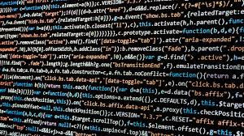
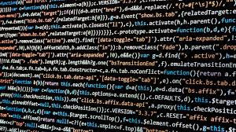
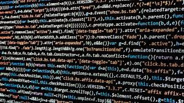

Programacion un Mundo Aparte
 

La Programacion es el lenguaje de la invención tecnológica. A través de ella, se han creado soluciones que han revolucionado industrias enteras, desde la manera en que nos comunicamos hasta cómo realizamos transacciones financieras
La programación es fundamental en el mundo moderno debido a su capacidad para resolver problemas, automatizar tareas, crear sistemas y aplicaciones que facilitan la vida cotidiana.

La programación es el proceso de crear un conjunto de instrucciones que le dicen a una computadora como realizar algún tipo de tarea. Pero no solo la acción de escribir un código para que la computadora o el software lo ejecute. Incluye, además, todas las tareas necesarias para que el código funcione correctamente y cumpla el objetivo para el cual se escribió. En la actualidad, la noción de programación se encuentra muy asociada a la creación de aplicaciones de informática y videojuegos. En este sentido, es el proceso por el cual una persona desarrolla un programa, valiéndose de una herramienta que le permita escribir el código (el cual puede estar en uno o varios lenguajes, como C++, Java y Python, entre muchos otros) y de otra que sea capaz de “traducirlo” a lo que se conoce como lenguaje de máquina, que puede "comprender" el microprocesador. Funcionamiento de un programa Para crear un programa y que la computadora lo interprete y ejecute, las instrucciones deben escribirse en un lenguaje de programación. El lenguaje entendido por una computadora se conoce como código máquina. Consiste en secuencias de instrucciones básicas que el procesador reconoce, codificadas como cadenas de números 1 y 0 (sistema binario). En los primeros tiempos de la computación se programaba directamente en código máquina. Escribir programas así resultaba demasiado complicado, también era difícil entenderlos y mantenerlos una vez escritos. Con el tiempo, se fueron desarrollando herramientas para facilitar el trabajo. Los primeros científicos que trabajaron en el área decidieron reemplazar las secuencias de unos y ceros por mnemónicos, que son abreviaturas en inglés de la función que cumple una instrucción de procesador. Por ejemplo, para sumar se podría usar la letra A de la palabra inglesa add (añadir). Crearon así una familia de lenguajes de mayor nivel, que se conocen como lenguaje ensamblador o simplemente ensamblador (en inglés, assembly). Con el tiempo los ensambladores incorporaron facilidades adicionales, pero siempre manteniendo una correspondencia directa con las instrucciones de procesador. A nivel conceptual, entonces, programar en ensamblador es muy similar a hacerlo en lenguaje máquina, solo que de una forma más amigable. A medida que la complejidad de las tareas que realizaban las computadoras aumentaba, el lenguaje ensamblador fue mostrando limitaciones. Para hacer un programa había que conocer en detalle el funcionamiento de la computadora donde se iba a ejecutar, qué instrucciones proveía y cómo emplearlas. A veces las instrucciones eran demasiado básicas, por ejemplo podía haber una para sumar dos números pero no para multiplicar, y entonces era necesario programar un algoritmo que realizara la multiplicación con base en instrucciones más básicas. Otras veces, la forma de emplear las instrucciones era engorrosa. Además, si se usaba otro modelo de computadora, en muchos casos había que reescribir el programa con otras instrucciones.
| Imformacion Personal | Ciudad | |
|---|---|---|
| jorge | 23 | Buenos Aires |
| juan | 26 | |
| micaela | 27 | Buenos Aires |
| pie de tabla | ||